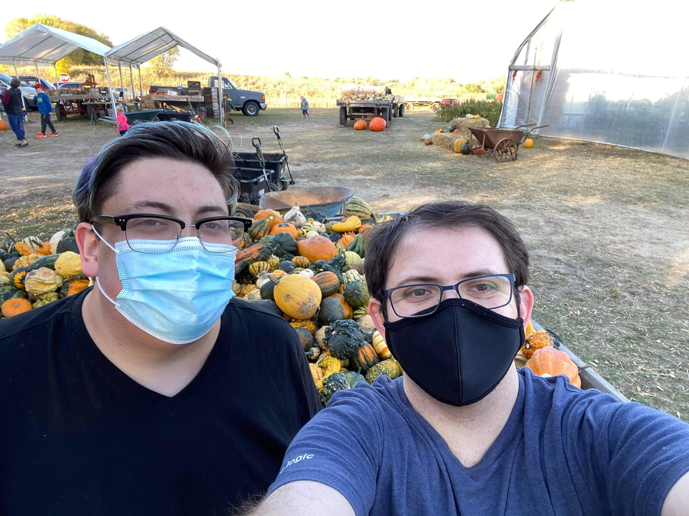

My boyfriend, Jeremy, is an extremely smart and super sweet person. I am glad he's so open in showing and including me in his interests and hobbies. I'm so happy his incorporating me into his life. It makes me feel cared for and wanted. He's so amazing.
I'm super thankful for him encouraging me to learn a little bit of coding. I have definitely gotten more insight into it and into how smart he is. I truly appreciate everything he does because being able to code as quickly and efficiently as he does, the amount of information he has when it comes to doing this on a daily basis, and the crazy amount of skill he has to do this... You're super amazing babe.

Notes
What I like about my Boyfriend
First, I really like how understanding he is. Jeremy is always finding ways to make sure I'm happy and knows how I'm feeling. That's another important aspect about him I like is his ability to have open communication. He can be so open and honest and direct, and I truly appreciate that part of him.
Second, I really like how cute and adorable he is. I'm super lucky and thankful that the guys before him left him behind so I could snatch him up. I couldn't be happier and I don't want to ever let him go. He's become such an important and strong influence in my life since he came into it. Did I mention he's fucking beautiful as hell?
Lastly, He has a really nice butt. Like, wow. He was blessed.
A Poem
Roses are red
Violets are blue
Coding is really cool
I'm gay
November 1st, 2020
Today, I woke up next to my gorgeous boyfriend. I put some pants and my sweatshirt on and went to get coffee and bagels. I came back and we ate breakfast in bed. After, we cuddled for a few minutes before he had to poop and start studying. I decided I was going to try learning code because I wanted to try doing what Jeremy does on a daily basis. This is super cool and really fun. I have a greater appreciation for all the hard work and skill my boyfriend puts into his work and school. He's so awesome.